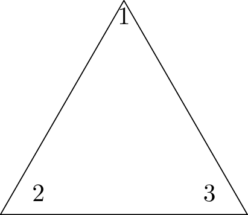
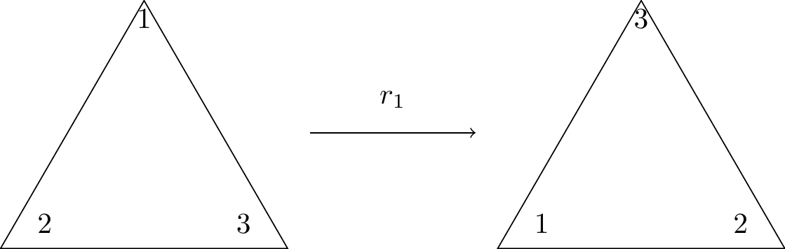

6 Permutation Groups
Consider the following, highly unrealistic, scenario. You have ten maths books on your bookshelf and one Friday evening, having nothing whatsoever better to do, you decide to arrange them in a different order. Having done this once you realise that there are many ways to rearrange the books and your mind turns to calculating that number. Clearly there are ten possible choices for the first book. For each of these ten possibilities there will be nine choices for the second book; thus there are \(10 \times 9\) ways of choosing the first two books. Continuing this argument leads you to conclude that the total number of ways of ordering the ten books is \(10 \times 9 \times 8 \times \ldots \times 2 \times 1 = 10! =3,628,800\) and assuming that each rearrangement takes 30 seconds to complete it will take you 3 years 165 days (assuming no leap year) to try out all possible arrangements.
6.1 Permutations
In the above example we refer to each arrangement as a permutation of the set of books. It should be clear that each permutation is simply a mapping from the set of books onto itself, where the mapping determines the order of the particular arrangement or permutation. Obviously, the mapping is a bijection (think about it) and we can now make the following formal definition.
Definition 6.1 (Permutation) A permutation of a finite set, \(X\), is a function \(f: X \rightarrow X\) that is bijective.
Example 6.1 Consider the set \(S=\{a, b, c, d\}\). and let \(f\) be the permutation of \(S\) such that
\[\begin{eqnarray*} f(a) &=& c \\ f(b) &=& b \\ f(c) &=& d \\ f(d) &=& a \end{eqnarray*}\]
We write \(f\) in a more standard way, changing the columns to rows in parentheses and omitting equals signs, as follows:
\[f= \begin{pmatrix} a & b & c & d \\ c & b & d & a \end{pmatrix}\]
Since a permutation is a function, we can compose any number of permutations and, since a permutation is a bijective function, it makes sense to talk about its inverse.
Example 6.2 Let \(S=\{1, 2, 3, 4, 5\}\) be a set and \(f\) and \(g\) be permutations of \(S\) defined by \[f = \begin{pmatrix} 1&2&3&4&5\\ 3&2&1&5&4 \end{pmatrix} \qquad \text{and} \qquad g = \begin{pmatrix} 1&2&3&4&5\\ 5&1&3&4&2 \end{pmatrix}.\] Find \(f \circ g\), \(g \circ f\) (are they the same?), \(g^2\) and \(g^{-1}\).
Solution:
\[\begin{eqnarray*} f \circ g &=& \begin{pmatrix} 1 & 2 & 3 & 4 & 5 \\ 4 & 3 & 1 & 5 & 2 \end{pmatrix} \\ g \circ f &=& \begin{pmatrix} 1 & 2 & 3 & 4 & 5 \\ 3 & 1 & 5 & 2 & 4 \end{pmatrix} \end{eqnarray*}\]
So \(f \circ g \ne g \circ f\).
We carry out the remaining compositions:
\[\begin{eqnarray*} g^2 = g \circ g &=& \begin{pmatrix} 1 & 2 & 3 & 4 & 5 \\ 2 & 5 & 3 & 4 & 1 \end{pmatrix} \\ g^{-1} &=& \begin{pmatrix} 1 & 2 & 3 & 4 & 5 \\ 2& 5 & 3 & 4 & 1 \end{pmatrix} \end{eqnarray*}\]
Notice that \[g \circ g^{-1} = g^{-1} \circ g = \begin{pmatrix} 1 & 2 & 3 & 4 & 5 \\ 1 & 2 & 3 & 4 & 5 \end{pmatrix} = \id.\]
Example 6.3 Let \(f = \left( \begin{array}{ccccc}1&2&3&4&5\\5&3&1&4&2 \end{array} \right)\) and \(g = \left( \begin{array}{ccccc}1&2&3&4&5\\4&1&5&3&2 \end{array} \right)\). Calculate \(fg\), \(gf\), and \(f^{-1}\).
Solution:
We have
\[\begin{eqnarray*} fg &=& \begin{pmatrix} 1 & 2 & 3 & 4 & 5 \\ 4 & 5 & 2 & 1 & 3 \end{pmatrix} \\ g f &=& \begin{pmatrix} 1 & 2 & 3 & 4 & 5 \\ 2 & 5 & 4 & 3 & 1 \end{pmatrix} \\ f^{-1} &=& \begin{pmatrix} 1 & 2 & 3 & 4 & 5 \\ 3 & 5 & 2 & 4 & 1 \end{pmatrix} \end{eqnarray*}\]
So why study permutations in Abstract Algebra? Well, what should be obvious is that for any finite set \(S\), we can collect together all of the possible permutations of that set into another set. Then, much less obviously, that set of permutations forms a group under function composition. Furthermore, and far more surprisingly, it turns out that every finite group is isomorphic to a group of permutations!
Theorem 6.1 Let \(A\) be a non-empty set and \(S_A\) be the set of all permutations of \(A\). Then, the pair \((S_A, \circ)\) forms a group, where \(\circ\) is the binary operation of function composition.
We verify that the group axioms hold.
- Clearly composing a permutation of \(A\) with another permutation of \(A\) results in a permutation of \(A\) so \(S_A\) is closed under composition of functions.
- Composition of functions is associative.
- The permutation \(\id\) of \(A\) defined such that \(\id(a) =a\) for all \(a \in A\) is the identity element. (One can easily verify that for any permutation \(f \in S_A\), \(f \circ \id = \id\circ f = f\).)
- Let \(f \in S_A\). Then \(f^{-1}\) exists (since \(f\) is a bijection) and \(f^{-1}\) is again an element of \(S_A\). Indeed, given \(a \in A\), \(f^{-1}(a)\) is the element \(a' \in A\) such that \(f(a') = a\). Thus we have: \[f\circ f^{-1}(a) = f(f^{-1}(a)) = a = \id(a)\] and \[f^{-1}\circ f(a) = f^{-1}(f(a)) = a = \id(a).\] Therefore, every element \(f \in S_A\) has a group theoretic inverse, it is the usual inverse \(f^{-1}\).
Definition 6.2 (Symmetric Group) Let \(X\) be the finite set \(\{1, 2, \ldots, n\}\). The group of all permutations of \(X\) is the symmetric group on \(n\) letters and is denoted \(S_n\).
\(S_n\) has order \(n! = n \times (n-1) \times (n-2) \times \ldots \times 2 \times 1\) for all \(n\).
6.2 Permutations as Cycles
An alternative (and more useful) notation for permutations is the one-row or cycle notation. Consider the set \(S = \{1, 2, 3, 4, 5\}\) and the permutation of that set \(f = \begin{pmatrix}1&2&3&4&5\\2&3&5&1&4\end{pmatrix}\). We can represent this as \((1 \; 2 \; 3 \; 5 \; 4)\) where 1 goes to 2, 2 goes to 3, 3 goes to 5, 5 goes to 4, and 4 goes to 1. In general, \(f=(a_1 \; a_2 \; \ldots a_{m-1} \; a_m)\) is used to denote the permutation \[f(a_1) = a_2, \; f(a_2) = a_3,\; \ldots, f(a_{m-1}) = a_m, \; f(a_m) = a_1.\]
Example 6.4
Let \[f= \begin{pmatrix} 1 & 2 & 3 & 4 & 5 & 6 & 7 \\ 3 & 1 & 5 & 4 & 7 & 6 & 2 \end{pmatrix} \in S_{7}.\]
Then, \[\begin{eqnarray*} f &=& ( 1 \; 3 \; 5 \; 7 \; 2)(4)(6) \\ &=& (1 \; 3 \; 5 \; 7 \; 2) \\ &=& (3 \; 5 \; 7 \; 2 \; 1) \\ &=& (5 \; 7 \; 2 \; 1 \; 3) \\ &=& (7 \; 2 \; 1 \; 3 \; 5) \\ &=& (2 \; 1 \; 3 \; 5 \; 7) \end{eqnarray*}\]
The cycle notation for a permutation is not necessarily unique!
It may seem that the single-row notation is more awkward than the two-line notation, but it does have some very useful properties that we now examine.
A \(k\)-cycle can be written in \(k\) different ways, each with the same ‘cyclic order’. For example the permutation \((1 \; 3 \; 5 \; 7 \; 2)\) in Example 6.4.
If \(f\) is a \(k\)-cycle, then \(f^k = id\) (that is, \(f\) has period \(k\)).
For example take \(f = (1 \; 2 \; 3) \in S_{3}\). Then, \(f^{2} = (1 \; 3 \; 2)\) and \(f^3 = (1)(2)(3) = \id\).
If \(f = (a_1 \; a_2 \; \ldots a_k)\) is a \(k\)-cycle, then \(f^{-1} = (a_k \; a_{k-1} \; \ldots \; a_2 a_1) = f^{k-1}\). (By the previous point \(\id = ff^{-1} = ff^{k-1}\). Therefore \(f^{-1} = f^{k-1}\) by cancelling.)
A cycle of length 1 is the identity.
Two cycles \((a_1 \; a_2 \; \ldots \; a_k)\) and \((b_1 \; b_2 \; \ldots \; b_n)\) are said to be disjoint if and only if \(a_i \neq b_j\) for all \(i\) and \(j\).
For example \(f = (1 \; 2 \; 4)\) and \(g = (3 \; 5 \; 6)\) are disjoint — they have no points in common. However if we take \(h = (1 \; 2 \; 3)\) and \(h\) and \(g\) are not disjoint – they have a point in common. Notice that \[hg = ( 1 \; 2 \; 3 \; 5 \; 6) \ne (1 \; 2 \; 5 \; 6 \; 3) = gh\] however \[fg = (1 \; 2 \; 4) (3 \; 5 \; 6) = (3 \; 5 \; 6) (1 \;2 \; 4) = gf.\]
Disjoint cycles commute.
For example \((1 \; 3 \; 2) (4 \; 6) = (4\; 6) (1\; 3 \; 2)\).
6.3 Cycle Decomposition
Consider the permutation \[f = \left( \begin{array}{ccccccccc}1&2&3&4&5&6&7&8&9\\7&4&1&8&5&2&9&6&3 \end{array} \right) \in S_9.\] It should be clear that we can represent this as the ‘product’ of two disjoint cycles \[f = (1 \; 7\; 9\; 3)(2 \; 4\; 8 \; 6) = (2 \; 4 \; 8 \; 6)(1 \; 7 \; 9 \; 3).\] This gives us what is called the cycle decomposition of \(f\). As the cycles are disjoint, then the decomposition is commutative.
Example 6.5
Let \[f = \left(\begin{array}{cccccccccccc} 1 & 2 & 3 & 4 & 5 & 6 & 7 & 8 & 9 & 10 & 11 & 12 \\ 8 & 6 & 1 & 9 & 10 & 2 & 7 & 3 & 12 & 5 & 4 & 11 \end{array}\right) \in S_{12}.\] Then \[\begin{eqnarray*} f &=& (1 \; 8 \; 3 )(2 \; 6)(4 \; 9 \; 12 \; 11)(5 \; 10)(7) \\ &=& (1 \; 8 \; 3 )(2 \; 6)(4 \; 9 \; 12 \; 11)(5 \; 10). \end{eqnarray*}\]
Note that if we had given ‘priority’ to larger numbers in the above we would have obtained
\((12 \; 11 \; 4 \; 9)(10 \; 5)(8 \; 3 \; 1)(6 \; 2)\).
This looks different, but is equally valid since we know that disjoint cycles commute, so the order of disjoint cycles can be changed without affecting the product, and each cycle can be written in different ways that preserve the same cyclic order.
Example 6.6 Find the cycle decomposition of the following product of non-disjoint cycles: \[(1 \; 2 \; 3)(2 \; 3 \; 4)(3 \; 4 \; 5).\]
| 1 | 2 | 3 | 4 | 5 | |
|---|---|---|---|---|---|
| \((3 \; 4\; 5)\) | 1 | 2 | 4 | 5 | 3 |
| \((2 \; 3\; 4)\) | 1 | 3 | 2 | 5 | 4 |
| \((1 \; 2\; 3)\) | 2 | 1 | 3 | 5 | 4 |
| 2 | 1 | 3 | 5 | 4 |
So, \[(1 \ 2 \ 3)(2 \ 3 \ 4)(3 \ 4 \ 5) = (1 \ 2) (3) (4 \ 5) = (1 \ 2)(4 \ 5).\]
Definition 6.3 (Orbits) The disjoint cycles of a permutation, including singletons, are called the orbits of the permutation.
Example 6.7 Write the following permutations as the product of disjoint cycles and state the number of orbits in each permutation. \[\alpha = \left( \begin{array}{ccccccc}1&2&3&4&5&6&7\\4&6&1&7&5&2&3 \end{array} \right) \in S_7, \qquad \beta = \left( \begin{array}{ccccccc}1&2&3&4&5&6&7\\7&6&1&5&4&2&3 \end{array} \right) \in S_8.\]
Solution:
We have \[\alpha = (1 \ 4 \ 7 \ 3)(2 \ 6)(5) = ( 1 \ 4 \ 7 \ 3)(2 \ 6)\] and \[\beta = (1 \ 7 \ 3)(2 \ 6)(4 \ 5)(8) = (1 \ 7 \ 3)(2 \ 6)(4 \ 5).\] So \(\alpha\) has three orbits and \(\beta\) has four orbits.
Example 6.8 Express the following permutation as a product of disjoint cycles. \[\gamma = (1 \; 3 \; 2 \; 5) (1 \; 2 \; 4 \; 6) (3 \; 6) \in S_6.\]
Solution:
- Method 1:
-
1 2 3 4 5 6 \((3 \; 6)\) 1 2 6 4 5 3 \((1 \; 2 \; 4\; 6)\) 2 4 1 6 5 3 \((1 \; 3 \; 2\; 5)\) 5 4 3 6 1 2 5 4 3 6 1 2 So \[\gamma = (1 \ 5)(2 \ 4 \ 6)(3) = (1 \ 5)(2 \ 4 \ 6).\]
- Method 2:
- We follow an element through respective cycles. For example, $\(1 \mapsto 1 \mapsto 2 \mapsto 5\)% and so, in total, \(1 \mapsto 5\). Similarly, we have: \[\begin{eqnarray*} 2 &\mapsto& 4 \\ 3 &\mapsto& 3 \\ 4 &\mapsto& 6 \\ 5 &\mapsto& 1 \\ 6 &\mapsto& 2. \end{eqnarray*}\] So \(\gamma = (1 \ 5) (2 \ 4 \ 6)\).
Example 6.9 Express the following permutation as a product of disjoint cycles. \[\delta = (1 \; 4 \; 2 ) (2 \; 3 \; 5) (1 \; 3 \; 4) \in S_5\]
Applying method $2 as above, we have: \[\delta = (1 \ 5)(2 \ 3)(4) = ( 1 \ 5)(2 \ 3).\]
6.4 Periods of Permutations
Consider the permutation \(\alpha = \left(\begin{array}{cccccccccc}1&2&3&4&5&6&7&8&9&10\\3&7&10&2&8&9&4&6&5&1\end{array}\right) \in S_{10}\). How do we calculate the period of \(\alpha\) in \(S_{10}\)? Note, first, the following: \[\begin{eqnarray*} \alpha &=& (1 \; 3 \; 10) \; (2 \: 7 \; 4) \; (5 \; 8 \; 6 \; 9)\\ \text{so} \quad \alpha^2 &=& (1 \; 3 \; 10) \; (2 \: 7 \; 4) \; (5 \; 8 \; 6 \; 9) \; (1 \; 3 \; 10) \; (2 \: 7 \; 4) \; (5 \; 8 \; 6 \; 9)\\ &=& (1 \; 3 \; 10) (1 \; 3 \; 10) \; (2 \: 7 \; 4) (2 \: 7 \; 4) \; (5 \; 8 \; 6 \; 9) (5 \; 8 \; 6 \; 9)\\ &=& (1 \; 3 \; 10)^2 \; (2 \: 7 \; 4)^2 \; (5 \; 8 \; 6 \; 9)^2\\ \end{eqnarray*}\] since disjoint cycles commute. Note, also, that a \(k\)-cycle has period \(k\). For example: \[\begin{eqnarray*} f&=&(a \; b \; c \; d)\\ f^2&=&(a \; c) (b \; d)\\ f^3&=&(a \; d \; c \; b)\\ f^4&=&(a) (b) (c) (d) = id. \end{eqnarray*}\]
We can now compute the period of \(\alpha\) as follows:
\[\begin{array}{ccccccccc} \alpha&=&(1 \; 3 \; 10)&(2 \: 7 \; 4)&(5 \; 8 \; 6 \; 9)&=&(1 \; 3 \; 10)&(2 \: 7 \; 4)&(5 \; 8 \; 6 \; 9)\\ \alpha^2&=&(1 \; 10 \; 3)&(2 \: 4 \; 7)&(5 \; 6) (8 \; 9)&=&(1 \; 10 \; 3)&(2 \: 4 \; 7)&(5 \; 6) (8 \; 9)\\ \alpha^3&=&(1) (10) (3)&(2) (4) (7)&(5 \; 9 \; 6 \; 8)&=&id&id&(5 \; 9 \; 6 \; 8)\\ \alpha^4&=&(1 \; 3 \; 10)&(2 \: 7 \; 4)&(5) (6) (8) (9)&=&(1 \; 3 \; 10)&(2 \: 7 \; 4)&id\\ \alpha^5&=&(1 \; 10 \; 3)&(2 \: 4 \; 7)&(5 \; 8 \; 6 \; 9)&=&(1 \; 10 \; 3)&(2 \: 4 \; 7)&(5 \; 8 \; 6 \; 9)\\ \alpha^6&=&(1) (10) (3)&(2) (4) (7)&(5 \; 6) (8 \; 9)&=&id&id&(5 \; 6) (8 \; 9)\\ \alpha^7&=&(1 \; 3 \; 10)&(2 \: 7 \; 4)&(5 \; 9 \; 6 \; 8)&=&(1 \; 3 \; 10)&(2 \: 7 \; 4)&(5 \; 9 \; 6 \; 8)\\ \alpha^8&=&(1 \; 10 \; 3)&(2 \: 4 \; 7)&(5) (6) (8) (9)&=&(1 \; 10 \; 3)&(2 \: 4 \; 7)&id\\ \alpha^9&=&(1) (10) (3)&(2) (4) (7)&(5 \; 8 \; 6 \; 9)&=&id&id&(5 \; 8 \; 6 \; 9)\\ \alpha^{10}&=&(1 \; 3 \; 10)&(2 \: 7 \; 4)&(5 \; 6) (8 \; 9)&=&(1 \; 3 \; 10)&(2 \: 7 \; 4)&(5 \; 6) (8 \; 9)\\ \alpha^{11}&=&(1 \; 10 \; 3)&(2 \: 4 \; 7)&(5 \; 9 \; 6 \; 8)&=&(1 \; 10 \; 3)&(2 \: 4 \; 7)&(5 \; 9 \; 6 \; 8)\\ \alpha^{12}&=&(1) (10) (3)&(2) (4) (7)&(5) (6) (8) (9)&=&id&id&id. \end{array}\]
So, the period of the permutation is 12. It should be clear, from this example, that the period of a permutation can be determined by finding the lowest common multiple of the lengths of its orbits. In this example we have that the period of \(\alpha\) is lcm(3, 3, 4) = 12.
6.5 Permutations as Transpositions
We begin with a definition.
Definition 6.4 (Transposition) A cycle \((i \; j)\) of length two interchanges, or transposes, \(i\) and \(j\) and is called a transposition.
The importance of transpositions is that any cycle may be expressed as a product of transpositions. Suppose we wish to arrange \(\spadesuit\) \(\heartsuit\) \(\diamondsuit\) \(\clubsuit\) as \(\clubsuit\) \(\spadesuit\) \(\heartsuit\) \(\diamondsuit\) using only transpositions (that is, swapping symbols two at a time). This corresponds to expressing the permutation \((1 \; 2 \; 3 \; 4)\) as a product of transpositions. One way to do this is as follows:
| 1 | 2 | 3 | 4 | |
| \(\spadesuit\) | \(\heartsuit\) | \(\diamondsuit\) | \(\clubsuit\) | |
| apply \((3 \ 4)\): | \(\spadesuit\) | \(\heartsuit\) | \(\clubsuit\) | \(\diamondsuit\) |
| apply \((2 \ 3)\): | \(\spadesuit\) | \(\clubsuit\) | \(\heartsuit\) | \(\diamondsuit\) |
| apply \((1 \ 2)\): | \(\clubsuit\) | \(\spadesuit\) | \(\heartsuit\) | \(\diamondsuit\) |
Thus we have that \[(1\; 2\; 3\; 4) = (1\; 2)(2 \; 3)(3 \; 4).\]
Recalling that this is function composition and, therefore, we start at the right-hand end of the product, we can state the following general formula: \[(a_1 \; a_2 \; a_3 \; \ldots \; a_{k-1} \; a_k) = (a_1 \; a_2)(a_2 \; a_3) \ldots (a_{k-1} \; a_k).\]
We could use an alternative approach as follows:
| 1 | 2 | 3 | 4 | |
| \(\spadesuit\) | \(\heartsuit\) | \(\diamondsuit\) | \(\clubsuit\) | |
| apply \((1 \ 2)\): | \(\heartsuit\) | \(\spadesuit\) | \(\diamondsuit\) | \(\clubsuit\) |
| apply \((1 \ 3)\): | \(\diamondsuit\) | \(\spadesuit\) | \(\heartsuit\) | \(\clubsuit\) |
| apply \((1 \ 4)\): | \(\clubsuit\) | \(\spadesuit\) | \(\heartsuit\) | \(\diamondsuit\) |
Thus we have that \[(1\; 2\; 3\; 4) = (1\; 4)(1 \; 3)(1 \; 2).\] This illustrates an alternative general formula: \[(a_1 \; a_2 \; a_3 \; \ldots \; a_{k-1} \; a_k) = (a_1 \; a_k)(a_1 \; a_{k-1}) \ldots (a_1 \; a_2).\]
Example 6.10 Express the permutation \(f = \left( \begin{array}{cccccccccc}1&2&3&4&5&6&7&8&9&10\\2&9&7&1&5&10&8&3&4&6 \end{array} \right)\) as a product of transpositions.
Solution:
First we express \(f\) as a product of disjoint cycles: \[f = ( 1 \ 2 \ 9 \ 4)(3 \ 7 \ 8)(6 \ 10).\] Using the first rule: \[f = (1 \ 2)(2 \ 9)(9 \ 4)(3 \ 7)(7 \ 8)(6 \ 10).\] Using the second rule: \[(1 \ 4)(1 \ 9)(1 \ 2)(3 \ 8)(3 \ 7)(6 \ 10).\]
We write the identity permutation as a product of transpositions as follows: \[(1 \; 2)(1 \; 2) = \text{id}\]
It is clear from what we have seen that the expression of a permutation as a product of transpositions is not unique. However, there is one feature of the composition that is constant and we shall now explore this. First, though, we consider the following example.
Example 6.11 Let \(f = \left( \begin{array}{cccccccccccc}1&2&3&4&5&6&7&8&9&10&11&12\\8&6&1&9&5&2&7&3&12&10&4&11 \end{array} \right) \in S_{12}\). We can write this as the product of disjoint cycles:
\[f= (1 \ 8 \ 3)(2 \ 6)(4 \ 9 \ 12 \ 11) \in S_{12}\] notice that \(f\) has \(5\) orbits.
We now consider what happens if we ‘pre-multiply’ this permutation by a transposition \((i \; j)\). We need to consider two cases:
Let \(i\) and \(j\) be from different orbits
For example we could take \(i =1\) and \(j=2\). Then \[(1 \ 2)f = (1 \ 8 \ 3 \ 2 \ 6)(4 \ 9 \ 12 \ 11).\] The number of orbits of \(f\) is now \(5\) — the effect is to merge the orbits containing \(1\) and \(2\).
Let \(i\) and \(j\) be from the same orbit
For example we can take \(i = 1\) and \(j =3\). Then \[(1 \ 3)f = (1 \ 8)(3)(2 \ 6)( 4 \ 9 \ 12 \ 11).\] The effect is to split the orbit containing \(1\) and \(3\) into two distinct orbits. Notice that the number of orbits of \((i \ j)f\) and \(f\) in each case differ by \(1\).
Strictly, we ought also to consider whether or not it matters if \(i\) or \(j\) come from an orbit of size 1.
For example, we could consider \(i = 1\) and \(j=5\).Then \[(1 \ 5) f = ( 1 \ 8 \ 3 \ 5)(2 \ 6)( 4 \ 9 \ 12 \ 11).\] Or \(i= 5\) and \(j= 7\), then \[(5 \ 7)f = (5 \ 7)(1 \ 8 \ 3)(2 \ 6)(4 \ 9 \ 12 \ 11).\]
Example 6.12 Consider the permutation \(f = (1 \; 7 \; 9 \; 3)(2 \; 4 \; 8 \; 6) \in S_9\). Pre-multiply \(f\) by a transposition \((i \; j)\) (and note the effect this has on the orbits of \(f\)) where
\(i\) and \(j\) come from the same orbit of \(f\), e.g. \((i \; j) = (4 \; 8)\).
\[(4 \ 8)f = (1 \ 7 \ 9 \ 3) (2 \ 8 \ 6) (4) = (1 \ 7 \ 9 \ 3) (2 \ 8 \ 6).\] Notice that \(f\) has \(3\) orbits and \((4 \ 8)f\) has \(4\) obits.
\(i\) and \(j\) come from different orbits of \(f\), e.g. \((i \; j) = (7 \; 2)\).
\[(7 \ 2)f = (1 \ 2 \ 4 \ 8 \ 6 \ 7 \ 9 \ 3).\] In this case \((7 \ 2)f\) has \(2\) orbits — one less than \(f\).
Lemma 6.1 Let \(f \in S_n, \, (n \geq 2),\) and \((i \; j)\) be a transposition in \(S_n\). Then the number of orbits of \(f\) and \((i \; j)f\) differ by 1.
Proof. We first express \(f\) as a product of disjoint cycles, \(c_1, c_2, \ldots, c_r\) and consider two cases.
- Case 1:
-
\(i\) and \(j\) are from distinct orbits of \(f\).
Without loss of generality, we may assume that \(i\) and \(j\) come from \(c_1\) and \(c_2\) respectively. Suppose \(c_1 = (x_1 \ x_2 \ x_3 \ \ldots \ x_{a})\) and \(c_2 = (y_1 \ y_2 \ \ldots \ y_b)\). We may assume, again without loss of generality that that \(i = x_1\) and \(j=y_1\). Now consider: \[\begin{eqnarray*} (i \ j) f &=& (x_1 \ y_1)(x_1 \ x_2 \ x_3 \ \ldots \ x_{a})(y_1 \ y_2 \ \ldots \ y_b)c_3 \ldots c_r\\ &=& (x_1 \ x_2 \ldots \ x_a \ y_1 \ y_2 \ldots y_b)c_3 \ldots c_r. \end{eqnarray*}\]
It follows that \((i \ j)f\) has one fewer orbit than \(f\),
- Case 2:
-
\(i\) and \(j\) are from the same orbit of \(f\).
We may assume without loss of generality that \(i\) and \(j\) come from \(c_1\). Let \(c_1 = (x_1 \ x_2 \ \ldots \ x_a)\). We may assume that \(i = x_1\) and \(j = x_d\) for \(1< d \le a\) so that \[c_1 = (i =x_1 \ x_2 \ \ldots \ x_d \ \ldots \ x_a).\] Then \[\begin{eqnarray*} (x_1 \ x_d)f &=& (x_1 \ x_d) (x_1 \ x_2 \ \ldots \ x_d \ \ldots \ x_a) c_2 \ldots c_r\\ &=& (x_1 \ x_2 \ \ldots \ x_{d-1})(x_d \ x_{d+1} \ \ldots \ x_{a}) c_2 \ldots c_r. \end{eqnarray*}\] We see that \(c_1\) is split into two disjoint cycles — the number of orbits of \((1 \ j)f\) is one more than \(f\).
Theorem 6.2 No permutation can be expressed both as a product of an even number of transpositions and as a product of an odd number of transpositions.
First we make the following observation. Let \(\tau_1, \tau_2, \ldots \tau_r\) be transpositions. Let \(m\) be the number of orbits of \(\tau_1 \ldots \tau_r \id\). By Lemma 6.1, if \(r\) is even, \(m\) and \(n\) have the same parity (that is they are either both even or both odd) and if \(r\) is odd, then \(m\) and \(n\) have different parities (one is even and the other is odd). This is easily seen since Lemma 6.1 says each time we multiply a permutation by a transposition we change the parity of the number of its orbit and the identity element has \(n\) orbits.
Now let \(f\) be a permutation. Suppose there are transpositions \(c_1, c_2 \ldots, c_r, d_1, d_2, \ldots d_s\) such that \(f\) can be expressed as \[f = c_1 c_2 \ldots c_r = d_1 d_2 \ldots d_s.\] Rearranging, it follows that \[d_s d_{s-1}\ldots d_{1}c_rc_{r-1}\ldots c_{1} = \id\] and so \[d_s d_{s-1}\ldots d_{1}c_rc_{r-1}\ldots c_{1} \id = \id.\] By our observation above, we must conclude that if \(r + s\) must be even. Since \(d_s d_{s-1}\ldots d_{1}c_rc_{r-1}\ldots c_{1} \id\) has \(n\) orbits.
Definition 6.5 (Parity) A permutation is even or odd according to whether it can be expressed as a product of an even number of transpositions or as an odd number of transpositions, respectively.
Example 6.13
The identity permutation \(\id \in S_n\) is an even permutation. This follows since \(\id = (i \ j)(i \ j)\).
Theorem 6.3 The number of even permutations in \(S_n\) is the same as the number of odd permutations in \(S_n\).
Let \(A_n\) be the set of even permutations in \(S_n\). Notice that \(S_n \backslash \{A_n\}\) is the set of odd permutations in \(S_n\). Let \(\tau\) be any transposition in \(S_n\). Define a map \(\theta: A_n \to S_n\backslash A_n\) by \(\theta(f) = \tau f\). Notice that by Lemma 6.1, for \(f \in A_n\) \(\tau f \in S_n \backslash A_n\) and so \(\theta\) indeed maps elements of \(A_n\) into the set \(S_n \backslash A_n\). We show that \(\theta\) is injective and surjective.
- Injective:
- Let \(f_1, f_2 \in A_n\) and suppose \(\theta(f_1) = \theta(f_2)\). This means that \(\tau f_1 = \tau f_2\), cancelling then yields that \(f_1 = f_2\).
- Surjective:
- Let \(g \in S_n\backslash A_n\). Then \(\tau g \in A_n\) by Lemma 6.1 again. Moreover, \[\theta( \tau g) = \tau (\tau g) = (\tau \tau) g = g.\] Therefore \(\theta\) is surjective.
The map \(\theta\) is therefore a bijection and so the number of even permutations in \(S_n\) must be the same as the number of odd permutations in \(S_n\).
Since the product of two even permutations is even, and the identity permutation is even, we have, by Lemma 3.5, that the set of all even permutations of degree \(n\) forms a subgroup of \(S_n\) called the alternating group of degree \(n\) and denoted \(A_n\). Both \(S_n\) and \(A_n\) are very important groups and you will encounter them again if you take the third-year optional module Group Theory. At present it is sufficient to note that \(A_4\) (which has order 12 - think about it) is isomorphic to the group of rotational symmetries of a regular tetrahedron, which provided us with the smallest counterexample to the converse of Lagrange’s Theorem.
6.6 Cayley’s Theorem
Consider the following examples.
Example 6.14 Notice that \(S_1\) has only one element. So, \(S_1 \cong \Z_1\) as there is only one group of order 1 (the trivial group containing only the identity). \(S_2\) has 2!=2 elements, so \(S_2 \cong \Z_2\) as there is only one group of order 2. What about \(S_3\)? This has 3!=6 elements, but there are two isomorphically distinct groups of order 6, namely \(\Z_6\) and \(D_3\). It is easy to see that \(S_3\) is non-abelian so \(S_3\) has to be isomorphic to \(D_3\). However, a more direct and satisfying approach is as follows:
Consider, as below, an equilateral triangle with vertices labelled with the numbers 1, 2 and 3 anticlockwise:

Each symmetry of the triangle induces a permutation of the vertices \(\{1,2,3\}\). For example the symmetry \(r_1\) (see Example 2.1) has the effect:

Thus we have \[r_1 \mapsto \begin{pmatrix} 1 & 2 & 3 \\ 2 & 3 & 1\end{pmatrix}.\]
Similarly we have,
\[\begin{eqnarray*} e &\mapsto& \begin{pmatrix} 1 & 2 & 3 \\ 1 & 2 & 3\end{pmatrix} \\ r_2 &\mapsto& \begin{pmatrix} 1 & 2 & 3 \\ 3 & 1 & 2\end{pmatrix} \\ s_1 &\mapsto& \begin{pmatrix} 1 & 2 & 3 \\ 1 & 3 & 2\end{pmatrix} \\ s_2 &\mapsto& \begin{pmatrix} 1 & 2 & 3 \\ 3 & 2 & 1\end{pmatrix} \\ s_3 &\mapsto& \begin{pmatrix} 1 & 2 & 3 \\ 2 & 1 & 3\end{pmatrix}. \end{eqnarray*}\]
This gives an isomorphism from \(D_3\) to \(S_3\). Clearly we have a bijection from \(D_3\) to \(S_3\) and it is easily verified that this bijection is also a homomorphism. For example, \(r_1 \circ s_1 = s_3\) and \[\begin{pmatrix} 1 & 2 & 3 \\ 2 & 3 &1 \end{pmatrix} \circ \begin{pmatrix} 1 & 2 & 3 \\ 1 & 3 &2 \end{pmatrix} = \begin{pmatrix} 1 & 2 & 3 \\ 2 & 1 &3 \end{pmatrix}.\]
Notice that a similar argument demonstrates that every dihedral group can be represented as a group of permutations. However, the example above is special — it is the only example where a dihedral group is isomorphism to a full symmetric group. When \(n >3\), the dihedral group \(D_n\) is isomorphic to a subgroup of the symmetric group.
It turns out, in fact, that every finite group is isomorphic to a subgroup of some symmetric group. Formally, if \(|G| = n\) then \(G\) is isomorphic to some subgroup of \(S_n\). This is what is known as Cayley’s Theorem and we prove this and study it in more detail in third-year Group Theory.
Theorem 6.4 (Cayley’s Theorem) Every finite group is isomorphic to a group of permutations.
Proof. Omitted.
We finish this chapter with an interesting example: A ‘riffle’ shuffle consists of splitting a pack of cards in equal halves and then interlacing the cards from each half. In a perfect riffle a deck of 52 cards, numbered from 1 to 52 from the bottom up, would result in a deck with the cards numbered 1, 27, 2, 28, …. from the bottom up. How many perfect riffle shuffles are required before a deck returns to its original position? Does it matter if the halves are interlaced so that after one shuffle the order of the cards is 27, 1, 28, 2, …. ?
Solution:
We consider this as a simple permutation. Let the cards be numbered sequentially from 1 to 52, starting with 1 at the bottom of the pack; thus the card number, at this stage, will correspond to its position in the pack. Let the top row be the starting position and let the bottom row be the position that the respective card occupies after one perfect riffle:
\[f = \left(\begin{array}{cccccccccccccccccccc}1&27&2&28&3&29&4&30&5&31&6&32&7&33&8&34&9&35&10&36\\1&2&3&4&5&6&7&8&9&10&11&12&13&14&15&16&17&18&19&20\end{array}\right.\] \[\begin{array}{cccccccccccccccccccc}&11&37&12&38&13&39&14&40&15&41&16&42&17&43&18&44&19&45\\&21&22&23&24&25&26&27&28&29&30&31&32&33&34&35&36&37&38\end{array}\] \[\hspace{-5.9em}\left.\begin{array}{cccccccccccccccccccccc}20&46& 21&47&22&48&23&49&24&50&25&51&26&52\\39&40&41&42&43&44&45&46&47&48&49&50&51&52\end{array}\right).\]
Now re-order so that the top row is sequential starting at 1 (our usual, two-row permutation representation). \[f = \left(\begin{array}{cccccccccccccccccccc}1&2&3&4&5&6&7&8&9&10&11&12&13&14&15&16&17&18&19&20\\1&3&5&7&9&11&13&15&17&19&21&23&25&27&29&31&33&35&37&39\end{array}\right.\] \[\hspace{2.5em}\begin{array}{cccccccccccccccccccc}21&22&23&24&25&26&27&28&29&30&31&32&33&34&35&36&37&38&39\\41&43&45&47&49&51&2&4&6&8&10&12&14&16&18&20&22&24&26\end{array}\] \[\hspace{-6.9em}\left.\begin{array}{cccccccccccccccc}40& 41&42&43&44&45&46&47&48&49&50&51&52\\28&30&32&34&36&38&40&42&44&46&48&50&52\end{array}\right).\]
Then, using the usual method of writing a permutation as a product of disjoint cycles, we have that
\[\begin{eqnarray*} f &=& (2\; 3 \; 5 \; 9 \; 17 \;33 \; 14 \; 27) (4 \; 7 \; 13 \; 25 \; 49 \; 46 \; 40 \; 28) (6 \; 11 \; 21 \; 41 \; 30 \; 8 \; 15 \; 29)\\ &&(10 \; 19 \; 37 \; 22 \; 43 \; 34 \; 16 \; 31) (12 \; 23 \; 45 \; 38 \; 24 \; 47 \; 42 \; 32) (18 \; 35)\\ && (20 \; 39 \; 26 \; 51 \; 50 \; 48 \; 44 \; 36). \end{eqnarray*}\]
Hence, the period of \(f\) is lcm(8, 8, 8, 8, 8, 2, 8) = 8.
Using the same method to investigate the other arrangement following the first riffle:
\[f = \left(\begin{array}{cccccccccccccccccccc}27&1&28&2&29&3&30&4&31&5&32&6&33&7&34&8&35&9&36&10\\1&2&3&4&5&6&7&8&9&10&11&12&13&14&15&16&17&18&19&20\end{array}\right.\] \[\hspace{2.5em}\begin{array}{cccccccccccccccccccc}37&11&38&12&39&13&40&14&41&15&42&16&43&17&44&18&45&19&46\\21&22&23&24&25&26&27&28&29&30&31&32&33&34&35&36&37&38&39\end{array}\] \[\hspace{-6.9em}\left.\begin{array}{cccccccccccccc}20&47&21&48&22&49&23&50&24&51&25&52&26\\40&41&42&43&44&45&46&47&48&49&50&51&52\end{array}\right).\]
Now re-order so that the top row is sequential starting at 1.
\[f = \left(\begin{array}{cccccccccccccccccccc}1&2&3&4&5&6&7&8&9&10&11&12&13&14&15&16&17&18&19&20\\2&4&6&8&10&12&14&16&18&20&22&24&26&28&30&32&34&36&38&40\end{array}\right.\] \[\hspace{2.5em}\begin{array}{cccccccccccccccccccc}21&22&23&24&25&26&27&28&29&30&31&32&33&34&35&36&37&38&39\\42&44&46&48&50&52&1&3&5&7&9&11&13&15&17&19&21&23&25\end{array}\] \[\hspace{-6.9em}\left.\begin{array}{cccccccccccccccc}40&41&42&43&44&45&46&47&48&49&50&51&52\\27&29&31&33&35&37&39&41&43&45&47&49&51\end{array}\right).\]
Then, using the usual method of writing a permutation as a product of disjoint cycles, we have that \[\begin{eqnarray*} f &=& (1 \; 2 \; 4 \; 8 \; 16 \; 32 \; 11 \; 22 \; 44 \; 35 \; 17 \; 34 \; 15 \; 30 \; 7 \; 14 \; 28 \; 3 \; 6 \; 12 \; 24 \; 48 \; 43 \; 33 \; 13 \; 26 \; 52 \; 51 \; 49 \; 45 \\ && 37 \; 21 \; 42 \; 31 \; 9 \; 18 \; 36 \; 19 \; 38 \; 23 \; 46 \; 39 \; 25 \; 50 \; 47 \; 41 \; 29 \; 5 \; 10 \; 20 \; 40 \; 27). \end{eqnarray*}\] Hence, the period of \(f\) is now 52.
6.7 Problem Sheet 6
For Week 8; covers Chapter 6.
Let \((G_1,\circ)\) and \((G_2,*)\) be groups and \(\theta:G_1 \rightarrow G_2\) be an injective homomorphism. For each of the following statements, either prove that it is true or provide a counter-example:
- If \((G_1,\circ)\) is abelian, then \((G_2,*)\) is abelian.
- If \((G_2, *)\) is abelian, then \((G_1,\circ)\) abelian.
Recall that the kernel of the homomorphism is a subgroup of the domain. Recall, also, that we said in lectures that the size of the image of a homomorphism equals the size of the domain divided by the size of its kernel. That, of course, related to examples where both the domain and the image were finite. What happens if we now consider examples where infinity plays a part? So, investigate the kernels of the following homomorphisms in light of the above relationship:
- \(\theta : (\Z, +) \rightarrow \Z_n\) defined by \(\forall a \in \Z, \; \theta(a) = a \modu n)\),
- \(\phi : GL(2, \R) \rightarrow \R \backslash \{0\}\) defined by \(\forall A \in GL(2, \R),\; \phi(A) = |A|\).
Let \(f = \left( \begin{array}{ccccc}1&2&3&4&5\\2&3&5&1&4 \end{array} \right)\) and \(g = \left( \begin{array}{ccccc}1&2&3&4&5\\4&3&2&1&5 \end{array} \right)\). Calculate \(g \circ f\), \(f \circ g\), \(f^2\), and \(g^2\).
For each of the following permutations
- write the permutation as a product of disjoint cycles,
- state the number of orbits of the permutation,
- find the inverse permutation,
- write the permutation as a product of transpositions in two different ways,
- state whether the permutation is even or odd,
- find the period of the permutation.
- \(\alpha = \left( \begin{array}{cccccccccccc}1&2&3&4&5&6&7&8&9&10&11&12\\7&12&8&6&9&11&3&1&2&10&4&5 \end{array} \right) \in S_{12}\).
- \(\beta = \left( \begin{array}{cccccccccccc}1&2&3&4&5&6&7&8&9&10&11&12\\6&12&10&9&3&11&7&5&1&8&4&2 \end{array} \right) \in S_{12}\).
- \(\gamma = (1 \; 3 \; 8 \; 5) (2 \; 9 \; 3) (1 \; 4\; 3 \; 7) (4 \; 5 \; 8 \; 9) \in S_9\).
- \(\delta = (1 \; 5 \; 3 \; 6) (6 \; 3 \; 2 \; 1) (1 \; 2 \; 5) (3 \; 5 \; 7 \; 1) (4 \; 6 \; 1 \; 5) \in S_8\).
- \(\epsilon = (1 \; 3 \; 4) (3 \; 2 \; 1) (4 \; 3 \; 1) (5 \; 4 \; 3) (2 \; 5 \; 1) \in S_5\).